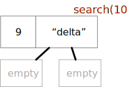

Recursion in Object-Oriented Programs
Contents
Recursion in Object-Oriented Programs#
You’ve seen and written recursive functions before. The same basic concepts apply in object-oriented programs with classes and objects, but with a twist: The data structure often has the same “shape” as the recursive function, and the parts of the recursive function are often divided between methods in different subclasses.
Review of Recursion#
Recall that a recursive function is divided into one or more base cases and one or more recursive or inductive cases. Together these have a fairly standard structure. In pseudocode:
def recursive_function(value):
"""We always check base cases first"""
if base case applies:
do the base case and return
elif another base case applies:
do the base case and return
else
"""Recursive case(s) follow"""
break value into pieces p1, p2, ...
r1 = recursive_function(p1)
r2 = recursive_function(p2)
...
return combination of value, r1, r2, ...
For example, the classic factorial example can be written as
def classic_factorial(value: int) -> int:
"""We always check base cases first"""
if value < 2:
return 1
else:
"""Recursive case(s) follow"""
p1 = value - 1
r1 = classic_factorial(p1)
return value * r1
which we would typically simplify to
def fact(value: int) -> int:
if value < 2:
return 1
return value * fact(value - 1)
We can see the same basic structure in a binary search. Suppose we have a sorted table of (key, value) pairs that looks like this:
table = [(1, "alpha"), (3, "beta"), (4, "gamma"), (9, "delta"), (12, "epsilon")]
The table is sorted by key. We can search it like this:
def bin_search(key: int, table: List[Tuple[int, str]]) -> str:
return bin_search_range(key, table, 0, len(table) - 1)
def bin_search_range(key: int, table: List[Tuple[int, str]],
low: int, high: int) -> str:
"""Recursive binary search in range low..high inclusive"""
"""Base case 1: Key is not in table"""
if low > high:
return "No such value"
mid = (high + low) // 2
entry_key, entry_value = table[mid]
"""Base case 2: Key found at midpoint in table"""
if entry_key == key:
return entry_value
if key < entry_key:
"""Recursive case 1: Key must be before midpoint, or absent"""
return bin_search_range(key, table, low, mid - 1)
else:
"""Recursive case 2: Key must be after midpoint, or absent"""
return bin_search_range(key, table, mid + 1, high)
Recursive Data Structures#
A data structure can also have a recursive structure: Tuples can contain tuples, lists can contain lists, dicts can contain dicts, etc. Instead of a simple list, we could make the table have four elements:
where smaller keys and larger keys are themselves tables with the same form, lists within lists, so that we get

In Python, the table could be represented as
alpha_tree = [4, "gamma",
[3, "beta",
[1, "alpha", [], []],
[]],
[12, "epsilon",
[9, "delta", [], []],
[15, "zeta", [], []]]
]
We would typically visualize this structure not by drawing list cells within list cells, but by drawing the “nested in” relation as lines. We call such a structure a tree, with the root of the tree at the top. Each entry in the tree is called a node. Every node except the root is connected to a single parent above it. A node may be connected to one or more children below it. A node without children is called a leaf, and other nodes are called internal nodes.
In this diagram key 4 is at the root. Keys 1, 9, and 15 are in leaves, and 4, 3, and 12 are internal nodes.
Now we can rewrite our binary search as a search in the nested list structure, or tree:
def nested_list_search(key: int, table: list) -> str:
"""Table is [key, value, smaller keys, larger keys]"""
log.debug(f"Search for {key} in {table}")
"""Base case 1: There are no keys"""
if table == []:
return "No such value"
entry_key, entry_value, smaller, larger = table
"""Base case 2: Key is found"""
if key == entry_key:
return entry_value
if key < entry_key:
"""Recursive case 1: Must be in the smaller keys"""
return nested_list_search(key, smaller)
else:
"""Recursive case 2: Must be in the larger keys"""
return nested_list_search(key, larger)
Notice that this is almost the same logic as our binary search in a list.
The differences are that now the data is “shaped like the algorithm”.
When we searched a sorted list, we divided the list into a middle element,
a sublist of smaller elements, and a sublist of larger elements. The nested
list has already been divided up into a middle element (which appears in the
first key and value), a sublist of smaller elements, and a sublist of larger
elements. Instead of calculating a midpoint, our nested_search_list just
follows the data structure.
Hierarchical Structure as Classes#
We can implement the same logical structure using classes and objects. Note that when we represented the tree using nested lists, we used empty lists to represent empty sets of entries with larger or smaller keys. Using classes, we can instead create a distinct subclass for an empty table.
We’ll create an abstract base class for the tree structure, with a concrete subclass for a non-empty node and a concrete subclass for an empty node:
class GreekSearchTree:
"""An abstract base class for the table of Greek letters"""
def __init__(self):
raise NotImplementedError("Nope, can't do that")
class Node(GreekSearchTree):
def __init__(self, key: int, value: str, smaller: GreekSearchTree, larger: GreekSearchTree):
self.key = key
self.value = value
self.smaller = smaller
self.larger = larger
class Empty(GreekSearchTree):
def __init__(self):
pass
With these classes we can build up the tree structure:
# The leaves
empty = Empty() # I really only need one of these
alpha = Node(1, "alpha", empty, empty)
delta = Node(9, "delta", empty, empty)
zeta = Node(15, "zeta", empty, empty)
# The internal nodes
beta = Node(3, "beta", alpha, empty)
epsilon = Node(12, "epsilon", delta, zeta)
gamma = Node(4, "gamma", beta, epsilon)
# (4, gamma) is at the root
tree = gamma
What about a search method? In the abstract base class, we will give a method definition with the header for the search method.
class GreekSearchTree:
"""An abstract base class for the table of Greek letters"""
def __init__(self):
raise NotImplementedError("Nope, can't do that")
def search(self, key: int) -> str:
"""Return associated string or 'No such value'"""
raise NotImplementedError("Concrete classes must override the search method")
We’ll override that search method for the non-empty node class:
class Node(GreekSearchTree):
def __init__(self, key: int, value: str, smaller: GreekSearchTree, larger: GreekSearchTree):
self.key = key
self.value = value
self.smaller = smaller
self.larger = larger
def search(self, key) -> str:
if self.key == key:
return self.value
if key < self.key:
return self.smaller.search(key)
else:
return self.larger.search(key)
In this search method we see one of the base cases
(when the key is found) and the recursive cases
for searching in the subtree of smaller keys
or the subtree of larger keys. But where is the
other base case?
The other case is not in this class at all, but is
rather in the search method of the other concrete
class:
class Empty(GreekSearchTree):
def __init__(self):
pass
def search(self, key) -> str:
return "No such value"
Here we see the one big difference between recursive
functions and recursion in methods in a recursive
structure of objects. In the function, we always
used some kind of decision (typically an if statement)
to distinguish the base cases and recursive cases.
Typically the cases are distributed among
different subclasses, and part or all of the choice
of which cases to execute are controlled by
which kind of object the method is called in.
Let’s consider an example search for key 10.
Initially we call the ‘search’ method on the
root object, with key 4.
The key 10 is greater than the key in that node,
so the recursive part of the search method is
invoked on self.larger, which is the subtree
with key 12 at its root.
Now key 10 is smaller than the key in the node,
so it makes a recursive call to
self.smaller.search(key).

Now key 10 is larger than the key in the node,
so once again it makes a recursive call on
self.larger.search(key).
This time we get the method search with
class Empty. We don’t have to use an if
statement to determine that this is a base case.
We know it is a base case because that is the only
case that this Empty node could be asked to handle!
Other Recursive Structures and Methods#
Search trees like the table illustrated above are one important group of tree structures in software, but far from the only one. Often trees represent hierarchical “part-of” structures. Examples include geographic areas (country comprised of states or provinces, states made up of counties, counties further divided into precincts), graphics (a scene made up of shapes, with composite shapes and made up of simpler shapes, and simple line segments, points, and polygons as leaf nodes), documents (a book made up of chapters, chapters made up of sections, sections made up of paragraphs, paragraphs made up of lines) and so on. There is hardly an application domain in which tree structures do not find some use in software.
Wherever we find trees, we are likely to find some methods that walk or traverse the trees recursively. Sometimes these are some form of search, but not always. Many of the functions we might write for a list are also needed for a trees. With a list, we might have a choice between recursion and a simple loop. For example, the recursive binary search of a list could also be written without recursion, using a loop. The loop version of binary search is hardly more complex than the recursive version, and apt to execute a little faster. With tree structures, on the other hand, recursion is usually the better choice.
One widely used tree structure that you may have encountered already, and certainly will in the future, is the Document Object Model (DOM) of HTML. This is the data structure that a web browser constructs from the HTML source code of a web page, and it is the structure that style sheets and scripts consume and manipulate to support all the interactive effects of modern web applications.
Consider a very simplified version of the DOM
structure. Each “
class DOMNode:
"""Abstract base class, defines the interface
that concrete DOM node classes must conform to.
"""
def __init__(self):
raise NotImplementedError("Abstract constructor of DOMNode")
We might define several other methods that all
DOM nodes should implement, but for the example we’ll
consider only the simple magic methods like
__str__, which have default definitions already
inherited from class object.
The internal nodes of the DOM have tags (like
h1, h2 etc. for “header” elements and
p for paragraphs). These tagged sections
may be nested. This is represented by giving
each node a list of children. (Contrast this
to our search tree, in which each internal node
had exactly two children.)
class Tagged(DOMNode):
def __init__(self, tag: str, children: List[DOMNode] = []):
self.tag = tag
self.children = children
def append(self, node:DOMNode):
self.children.append(node)
How shall we define the __str__ method for a
tagged node? Let’s make it look like html,
in which begin-tags like <p> are paired with
end-tags like </p>.
def __str__(self) -> str:
"""Text form is like HTML source code"""
parts = [str(part) for part in self.children]
return f"<{self.tag}> {' '.join(parts)} </{self.tag}>\n"
Notice that the __str__ method uses f-strings
that implicitly make calls on the __str__ methods
of the children of a Tagged node. Thus producing
the text for a DOM tree is recursive.
Plain text nodes, which will always be leaves of the DOM, will be simple:
class Plain(DOMNode):
"""Plain text content is essentially just a string"""
def __init__(self, text: str):
self.text = text
def append(self, text: str):
self.text += text
def __str__(self):
return self.text
Where we have a recursive tree traversal,
leaf node classes usually handle a base case.
For creating a string representation, the
__str__ methods implement a recursive walk
over the tree, and we can see that the simple
__str__ method of Plain is a base case.
Now we can build a DOM tree with calls to
the constructors of Tagged and Plain:
page = Tagged("html",
[Tagged("head", [Tagged("title", [Plain("My Tremendous Novel")])]),
Tagged("body", [Tagged("h1", [Plain("A Tail of Two Mice")]),
Tagged("h2", [Plain("By Little Charley Dickie")]),
Tagged("p", [Plain("It was the worst of cats."),
Plain("Like, really bad. Unbelievably bad.")]),
Tagged("h3", [Plain("Copyright 2020 by L.C.D.")])
]) # End of body
]) # End of document
If we print page, its __str__ method will be
called, and the recursive __str__ calls will
produce the following output:
<html> <head> <title> My Tremendous Novel </title>
</head>
<body> <h1> A Tail of Two Mice </h1>
<h2> By Little Charley Dickie </h2>
<p> It was the worst of cats. Like, really bad. Unbelievably bad </p>
<h3> Copyright 2020 by L.C.D. </h3>
</body>
</html>
Summary#
The basic logic of recursion is the same for object-oriented programs as for recursive functions that do not involve classes and objects. Just as before, we must identify one or more base cases and one or more recursive cases that build up complete results from simpler cases.
The key difference is that with classes and objects,
the recursive structure of the algorithms is often
the same as the recursive structure of the objects.
Often we will have the base case in one subclass
and the recursive case in another subclass. Instead
of writing an if statement to control which case
applies, we simply let each class take care of the
part of the logic that belongs to it. When a leaf
node and an internal node both have a method m,
usually the method m in the leaf node class will
handle only the base case, and the method m in the
internal node class will handle only the recursive
case.
Source Code#
Source code for this chapter is in two files, 03_recursion.py and 03_simpledom.py.